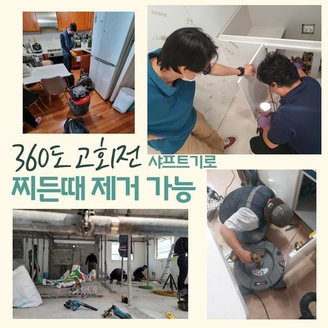
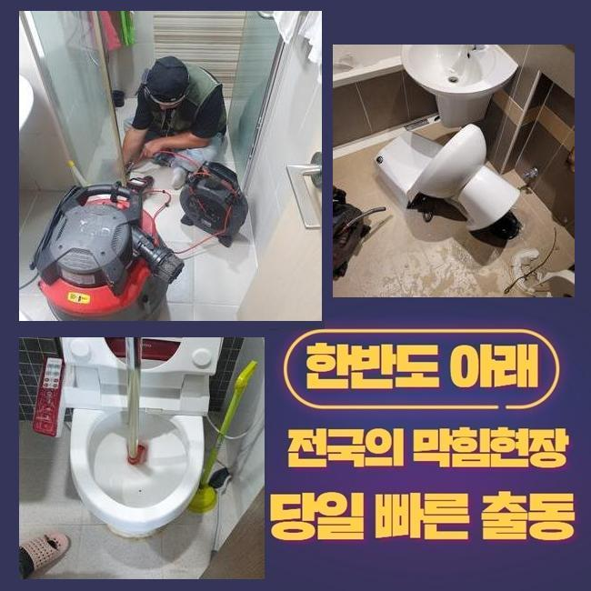
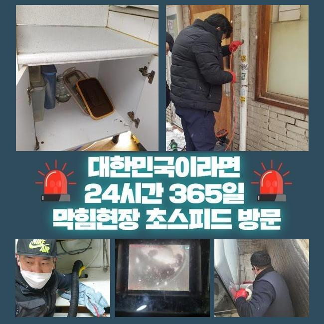
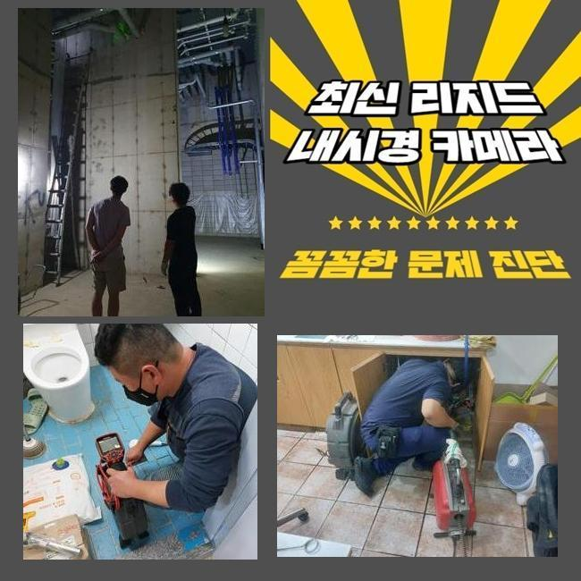
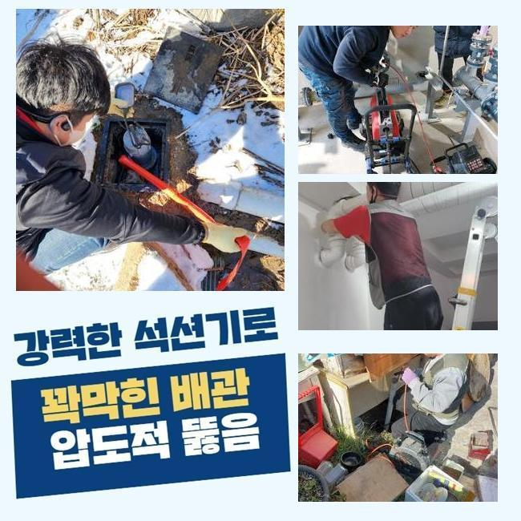
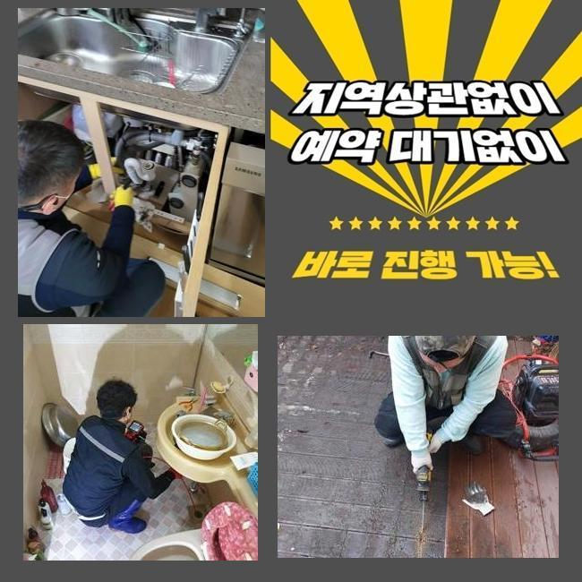
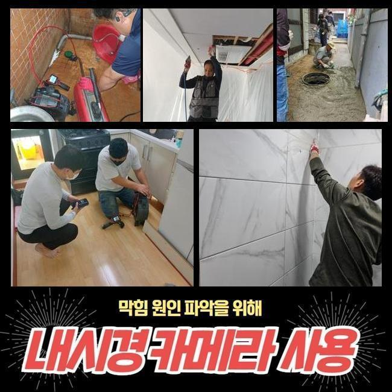

🏠 수원 정자1동씽크대뚫음 영화동 하수구뚫는비용 누수탐지
수원 싱크대막힘 전문 시공 후기

📋 작업 개요
- 위치: 수원
- 서비스 유형: 싱크대막힘, 하수구막힘, 배관막힘, 누수수리, 역류해결, 뚫는업체, 배관청소, 고압세척
- 작업 일시: 2024. 12. 6. 18:28
- 업체명: 하수구수사대 (010-5615-2118)
🔍 문제 상황
수원 정자1동씽크대뚫음 영화동 하수구뚫는비용 누수탐지
생활을 하시다가 수도배관에 이상이 발견되면 어떠한 방법들로 수리를 해야할까요
가정에서 배수라인이 막힌 경우에 전문적인 도움없이 혼자서 막힌 배관을 쑤셔보거나 염산 등의 약품등을 이용하는 사례가 있어요
이런 방법과 약품들은 배수구 막힘문제를 해결하는 방식으로 무리가 있습니다
옷걸이와 같이 날카롭고 예리한 도구등으로 하수라인에 속을 긁어파내면 배수라인에 손상들을 주게되어 배수라인에 구멍이 생기는 등의 문제로 인해 하수라인을 새로 교체하는 등의 경우도 생기게 됩니다
더불어 독성이 있는 약물은 이물질로 가득한 하수라인을 오히려 악화시키며 계속적으로 이용할 경우 배수관이 부식되며 새로운 설비로 바꾸는 경우도 생깁니다
약품들을 사용하실 때에는 매우 조심하셔야해요
저희 전문진에게 문의전화를 주셨던 의뢰인분께서도 계속적인 약품의 이용으로 하수관이 손상을 입으면서 고약한 냄새가 난다고 말씀하셨습니다
인터넷에서 살 수 있는 약물은 전문적인게 아니여서 근본적으로 문제점을 처리할 수가 없고 사용하는 사람의 상세한 이해력이나 전문기술이 없다면 그로인한 효과들도 기대하기 어려워요
약물을 사용하여 일시적으로 문제점이 해결이 된듯 싶지만 하수관에 계속적인 손상때문에 더욱 커다란 문제점이 발생합니다

🔎 원인 분석
💡 전문가 진단: 정밀 진단 장비를 사용하여 슬러지의 고착 여부를 판명하고 타격/세척 작업을 실시했습니다.
이런 약물로는 석회석 등의 딱딱하게 변형된 물질을 처리하는게 쉽지 않습니다
약품등으로 제거하는게 불가능하다면 배수관 막힘사고를 해결하기 위해 어떻게 할까요
배수구가 막힌 경우에 어떤 방식으로 해결할 수 있는지 꼼꼼하게 보여드릴게요!
하수라인이 막혀 물이 안내려간다는 도움요청에 신속하게 긴급출동 했습니다
막힘으로 인한 문제의 해결을 미루면 연쇄적으로 문제가 심해지면서 악취등이 생기게 되므로 이상함이 느껴졌을때 바로 수리를 해주시는게 중요해요
빠르게 도착하여 배수관의 상태를 자세히 진단 해보았습니다
하수설비쪽을 점검했으나 입구를 보는 것만으로는 정확하게 파악하지 못해서 배수관 내벽을 들여다봐야 했어요
본격적인 작업에 들어가기에 앞서 배수구 내시경기계를 사용했어요
내시경기기를 이용하면 막힌 배관의 현재 상태를 확인할 수 있어서 현재 문제에 맞는 방법을 찾아내서 신속하게 진행합니다
내시경선을 배관에 집어넣고 실시간으로 보며 막힘을 유발하는 이유들과 배수구의 형태를 점검했습니다

🔧 작업 과정
모니터를 확인해보니 석회질의 오염물질이 하수구를 막고있어 물길이 막힌 상황이였습니다
고객분께 석회가루가 섞인 침전물이 배수라인에 가득하다고 안내해드리고 다음 작업내용을 말씀 드렸어요
내부에 붙어있는 석회와 침전물을 없애고자 스케일링 작업과정을 시작했어요
스케일링작업은 내벽에 달라붙은 석회 침전물을 제거하는 방법으로 배수관 내벽을 세척하는 작업이예요
샤프트장비를 사용해서 강력한 체인줄이 배수라인의 지름에 알맞게 작동되며 이물질을 모두 제거하며 하수관을 정상적으로 수리할 수 있었습니다
이러한 석회질이 생기는 것은 욕실을 사용하며 생기게 되는 찌꺼기와 불순물이 굳어지면서 만들어집니다 세월이 지나며 층을 이루다가 하수관을 막히게 하는 이유가 돼요
스케일링과정은 내시경장치를 사용해 전체적인 구간을 꼼꼼히 작업완료합니다
역류상황이 심각했던 배수관을 제일 먼저 처리하며 역류상활을 해결할수 있었습니다
스케일링 중간에 내시경을 통해서 하수관 내부상황을 체크하며 이물질이 점점 없어지는걸 알 수 있었습니다
하수관 코너에 아직 제거되지 못하고 있는 침전물까지 마저 청소했습니다
소량의 이물질이라도 완벽하게 청소하지 못한다면 추후에 다시 문제가 되므로 남는 부분이 없게끔 청소를 진행해요
파쇄한 침전물을 없애고자서 석션장비를 사용했어요
석션기를 사용해 남은 불순물을 남김없이 청소한 후에 배수관의 내부 부위를 재검했어요
깨끗하게 하수구가 청소된걸 체크한 후 수도를 틀어서 정상적인 순환까지 점검을 완료했어요
한번에 가득 채운 물을 내려보내도 이상없이 배출 되었으며 배수관에 많은 양의 하수가 내려오며 역류하는 문제없이 통수가 원활했습니다
고객분께 마지막으로 안전한 배관 사용법을 말씀 드리고 배수구 주위를 깨끗히 청소했습니다


✅ 작업 완료
저희 전문진이 깨끗하게 복구를 완료했으므로 하수구를 이용하실때 사용자님께서도 오염물질을 분리하실 수 있도록 사용과 관리에 노력이 필요합니다
하수구는 공간이 크지 않으므로 생활 속의 머리카락들도 문제가 될 수 있어요
이와 같은 사례처럼 고객분께서도 난처하시다면 저희 전문진에게 지금 바로 연락주세요
최선을 다해 처리 해드리겠습니다




⚠️ 베란다 누수 및 방수 관리 방법
- ✅ 비가 많이 올 때 창틀 주변이나 아래층 천장에 얼룩이 생기는지 정기적으로 확인해 보세요.
- ✅ 우수관 주변 실리콘 마감이 들뜨거나 깨진 틈새가 있는지 손상 여부를 수시로 체크하세요.
- ✅ 베란다 바닥 타일의 줄눈(메지)이 소실되면 그 틈으로 물이 침투하여 누수가 유발됩니다.
- ✅ 누수 의심 증상 발견 시 방치하면 아래층 손실이 커지므로 즉시 전문가의 진단을 받으십시오.
💡 핵심 정리
- 확실한 장비 작업(내시경 점검 및 샤프트 스케일링)으로 원인을 뿌리 뽑습니다.
- 작업 후 1년 이내에 동일한 부위 재발 시 100% 무상 A/S 서비스를 보장합니다.
- 서울 · 경기 · 인천 전 지역에 24시간 언제든 긴급 출동할 수 있도록 항시 대기 중입니다.
❓ 자주 묻는 질문 (FAQ)
🚨 수원 싱크대막힘 문제로 고민이신가요?
정확한 원인 진단과 확실한 시공으로 재발 없는 해결을 약속드립니다.
24시간 긴급 출동 | 서울 · 경기 · 인천 전지역 | 1년 내 재발 시 무상 A/S